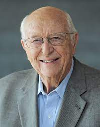
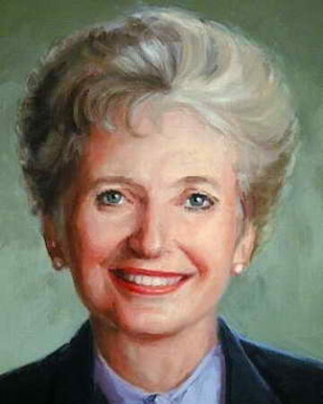

Mr. William H
My Father William was a prominent lawyer. He was the founder of
the law firm Shidler McBroom & Gates (a predecessor of K&L
Gates),and also served as president of both the Seattle King
County and Washington State Bar associations.

Mary Ann Maxwell
My mom was an American businesswoman, executive, civic activist,
and school teacher. She was the first female president of King
County's United Way, the first woman to chair the national
United Way’s executive committee.